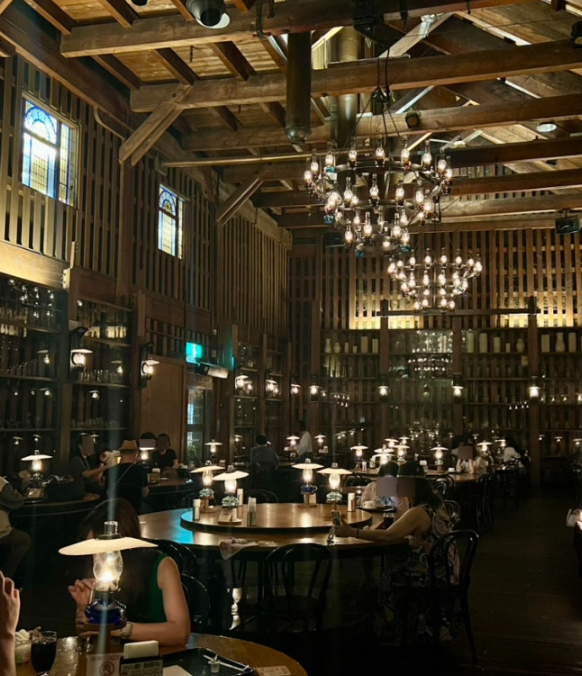
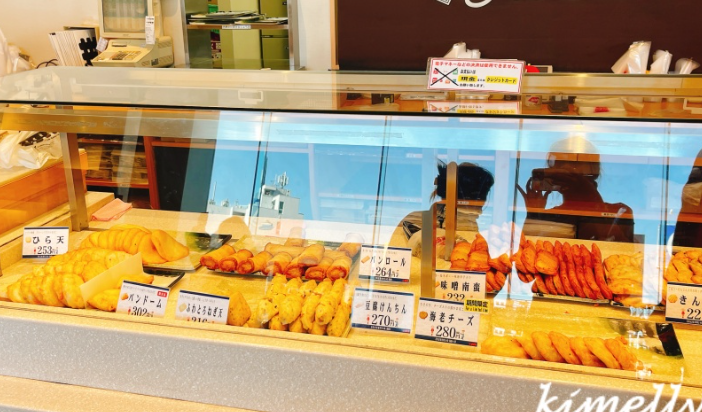

기타이치홀
오타루메이지 시대(약 150년 전) 창고를 개조한 레트로 카페.
167개의 석유 램프만으로 내부를 밝히는 환상적인 분위기로 유명.
피아노 연주 (화~금): 14:00~14:30, 15:00~15:30, 16:00~16:30.

카마에이 어묵공장
오타루100년이 넘는 역사의 오타루 대표 어묵 브랜드 '카마에이'의 공장 직영점.
갓 튀긴 어묵과 명물 '빵롤(Pan Roll)'을 맛볼 수 있음.